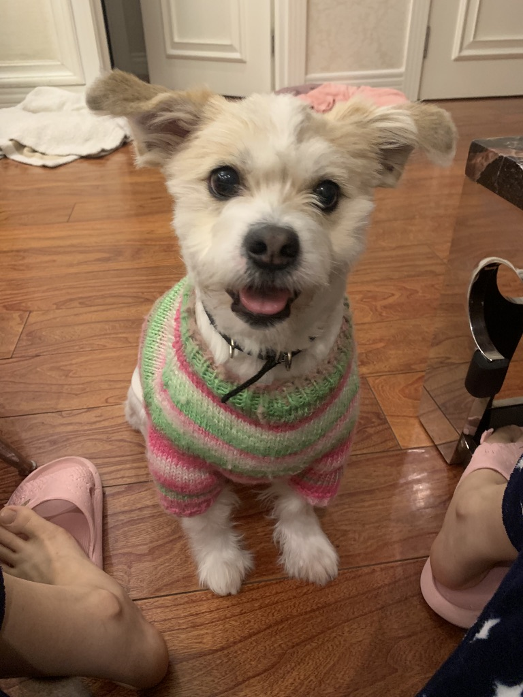
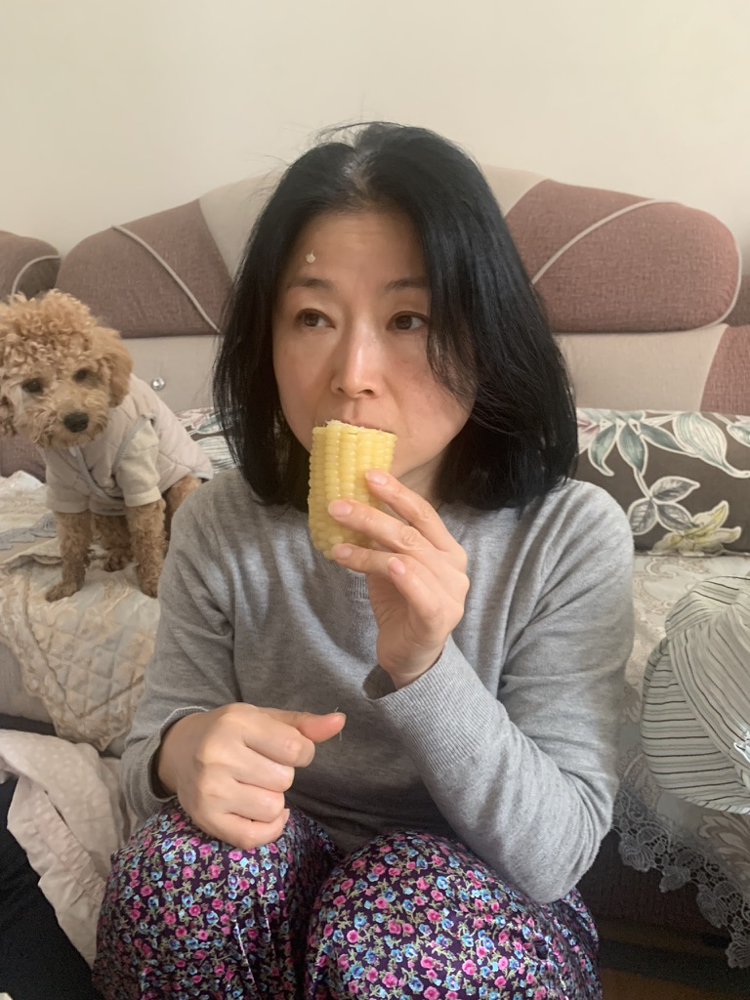
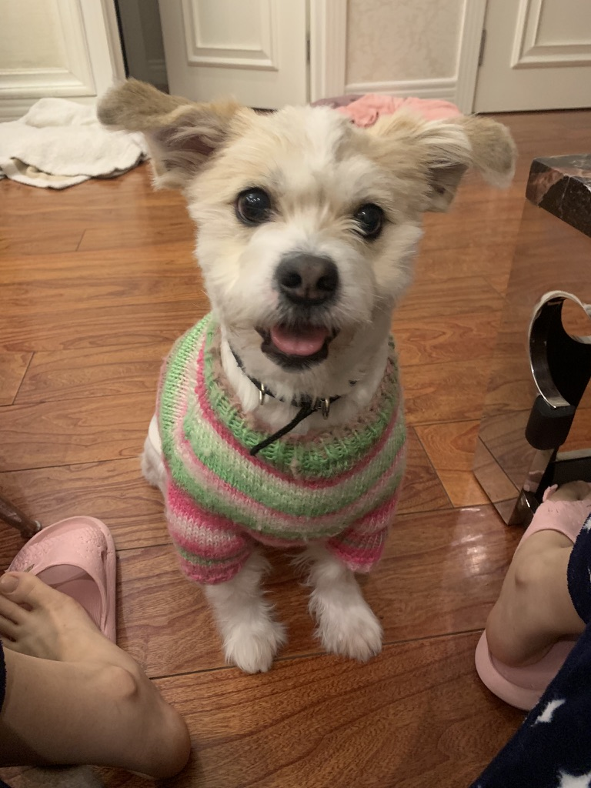
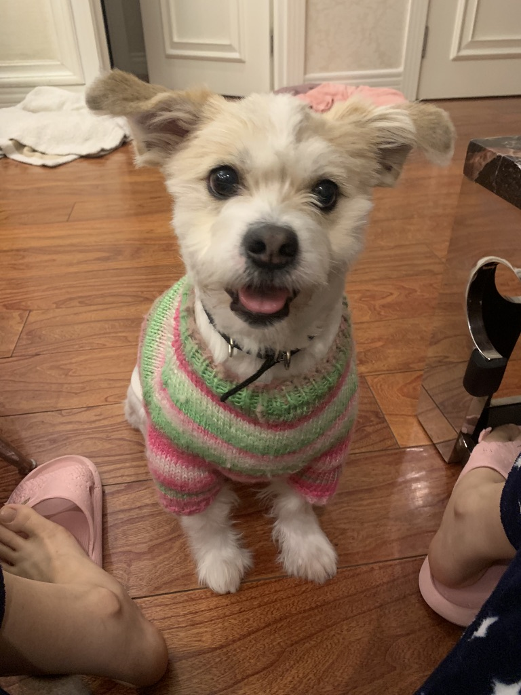

Family Member

엄마
이름 권준남.
1972년 2월 5일생.
우리가족의 엄마이다. 현재 해외에서 초등교사로 일하고 있다. 한국에서 부장으로 많은 후배들의 존경을 받았다. 기계라면 1도 다룰줄 모르는 그녀이지만, 딱히 문제되지는 않는다. 가끔 먹성이 터지면 매우 잘 먹는다. 가족의 건강을 위해 건강식을 잘 만들어주며, 요즘은 정신건강도 챙겨준다. 남편과 자녀들의 말을 잘 들어주고, 이해해준다. 웃긴 행동으로 자주 웃음을 주며 비염으로 1년에 한번씩 꼭 고생한다.

엄마의 장점/하고싶은 말을 아래에 적어주세요
Please enable JavaScript to view the
comments powered by Disqus.


 
